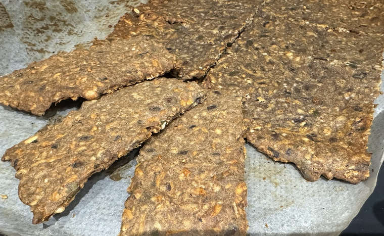

Crackers
Ingredients
20×
- 30 g of rolled oats
- 60 g of pumpkin seeds
- 30 g of sunflower seeds
- 130 g of buckwheat flour
- 0.5 tsp of salt
- 130 ml of water
- 20 g of olive oil
- 60 g of grated cheese
- spices of your choice
- sheet of baking paper

Hard to eat only one.
Preparation
Step 1
Mix 30 g of rolled oats, 60 g of pumpkin seeds, 30 g of sunflower seeds, 130 g of buckwheat flour and 0.5 tsp of salt.
Step 2
Stir 130 ml of water and 20 g of olive oil into the dry mix.
Step 3 (Optional)
Add 60 g of grated cheese or spices of your choice.
Step 4
Lay down a first sheet of baking paper. Spread the mixture on it, place a second sheet on top, and flatten with a rolling pin.
Step 5
Score lines or triangles. Carefully remove the top sheet.
Step 6
Bake at 150ºC for about 1 hour.